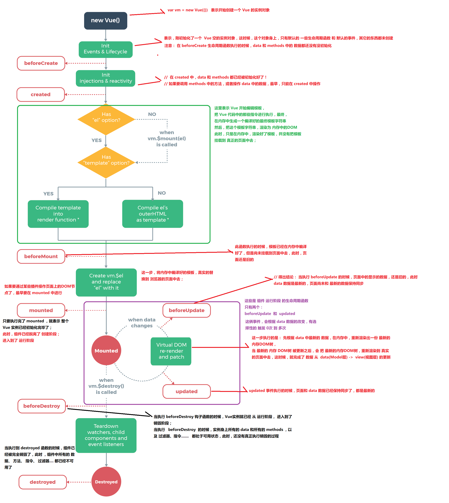

vue生命周期原文出处:本文由博客园博主angle-xiu提供。
原文连接:https://www.cnblogs.com/angle-xiu/p/11596919.html
vue生命周期
- 从创建vue开始的各种事件统称为生命周期
- 生命周期钩子，是事件的别名
- 主要生命周期函数分类：
- 创建期间的生命函数
- beforeCreate：第一个生命周期函数 在new以后的某个时候调用，这时候不能在该函数能调用里面的方法
- create：第二个生命周期函数 这时候实例已经创建好了，可以使用里面的数据及方法
- beforemount：第三个生命周期函数 这时候表示模板已经在内存中编辑完成了，在该函数执行时页面中的元素还没有被替换过来。只是一些模板字符串。
- mounted：第四个生命周期函数 这时候页面元素已经被内存中的模板给替换掉了。即实例已经初始化完毕，脱离了创建阶段。
- 运行期间的生命函数
- beforeUpdate：第一个 这时候只有当数据发生改变时，才会触发，触发次数0到多次，内存数据已经更新而页面未更新。
- update：第二个 这时候数据更新页面也已经更新。
- 销毁阶段的生命周期函数
- beforeDestroy：第一个 这时候表示实例已经从运行阶段到销毁阶段，实例里面的方法，指令仍可使用。
- destroyed：第二个 执行该函数的时候所有的方法及指令都已销毁，都不可使用
